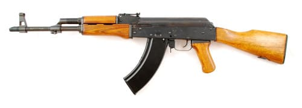

AK-47
Description

GP WASR HI-CAP 16″ Barrel, No Brake, Military Stock 7.62×39 30 Rnd Mag
Performance characteristics
Semi-auto rifle with military style stock. Thirty round double stack magazine.
New condition. This is a very popular model,
we have sold 1000’s since 2004 and they are
still going strong.
| Action |
Semi-Automatic |
| Caliber |
7.62 X 39 MM |
| Barrel Length |
16.25&Prime |
| Capacity |
30 + 1 |
| Trigger |
Two Stage |
| Safety |
Lever Detent |
| Overall Length |
34 1/4&Prime |
| Weight |
7.5 lbs |
| Stock |
Wood |
| Finish |
Blue military grade |
| Chrome lined barrel |
| No muzzle device, bayonet lug or bayonet |
| Comes with (1) 30rd double stack mags and side mounted scope rail |
Shipping
Estimated shipping times are posted on the product information page under the title
«Ships
On Or Before: » please note that all lead-times are estimates.
For items in our warehouse, we usually ship within 3 business days. For items only available
at distribution or other sources, the ship time may be up to 10 business days.
For items only available at the manufacturer, the lead-time may be a few weeks
or longer—
depending on availability.
Please also note that some items are unique, hard to obtain, or one-of-a-kind, so Impact reserves
the
right to cancel your order should an item not be available to ship.
We will not charge your credit card until your product ships, except for certain special orders.
We normally will ship FedEx. If you need faster shipment, we can ship 2nd Day or Next Day for
an extra charge.
Returns
How do I start the return process?
Log in to your www.TOPGUNS.com account and locate and click on the «Request Return»
link.
An Impact Guns agent will review your request for a return and respond within two business days.
As an alternate method, you can send an email to sales@TOPGUNS.com. Please be sure
to include your original order number and relevant contact information.
View more:
Desert Eagle Mark XIX Pistol .44 Magnum 6
CZ 750 Sniper 308 Win 26″ Barrel Synthetic Stock 10rd
Detachable Mags